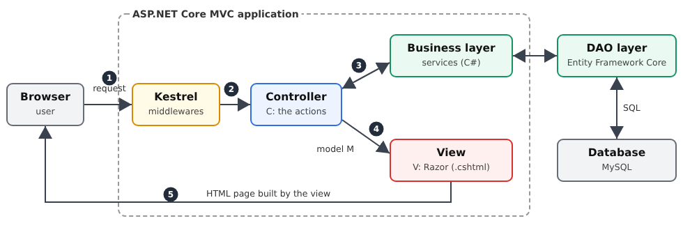
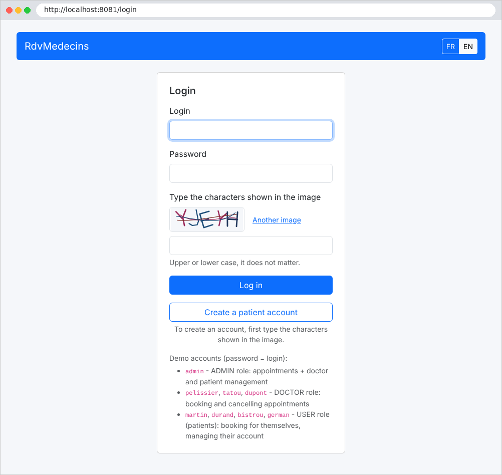

1. Introdução
O PDF do documento está |AQUI|.
Os códigos do documento estão |AQUI|.
Este documento é um produto da IA Claude, da Anthropic. Ele dá seguimento ao documento “Introdução passo a passo ao framework web [NestJS]” (2026), que por sua vez adaptou o documento “Introdução ao ASP.NET MVC por meio de exemplos” (2013) para o framework [NestJS]. Este documento faz o caminho inverso e volta à plataforma [.NET], em sua versão atual:
- o framework [NestJS] e a linguagem [TypeScript] são substituídos pelo framework [ASP.NET Core MVC] e pela linguagem [C#];
- as views [Handlebars] são substituídas por views [Razor];
- o ORM e o [TypeORM] são substituídos por um ORM e pelo [Entity Framework Core], sempre baseado no [MySQL].
O documento segue de perto a progressão do curso de [NestJS]: primeiro, vários pequenos projetos, cada um focado em um único conceito, seguidos de um estudo de caso completo — uma aplicação web de agendamento de consultas em um consultório médico — com todos os arquivos totalmente comentados. Os exemplos têm os mesmos números e abordam os mesmos temas que no curso de [NestJS]: quem conhece esse curso pode comparar os dois frameworks exemplo por exemplo. Isso, porém, não é necessário: este documento é autossuficiente e não pressupõe nenhum conhecimento prévio de [NestJS] nem, aliás, de [ASP.NET]. Os únicos pré-requisitos são noções básicas de programação web (o protocolo HTTP, a linguagem HTML) e a linguagem [C#].
1.1. O papel do ASP.NET Core MVC em uma aplicação web
Uma aplicação web costuma ser construída em camadas, cada uma comunicando-se apenas com as camadas vizinhas:

- a camada web recebe as requisições HTTP do navegador e devolve a ele páginas HTML. É a camada que o [ASP.NET Core MVC] nos ajuda a escrever;
- a camada de negócio contém as regras de negócio da aplicação (por exemplo, “um paciente só pode ter uma consulta futura”). Ela não sabe nada sobre a web: poderia servir igualmente a uma aplicação de linha de comando;
- a camada de acesso a dados (camada [DAO], de [Data Access Object]) lê e grava no banco de dados. Usaremos o ORM [Entity Framework Core] ([Object Relational Mapper]), que faz o mapeamento entre as linhas das tabelas e os objetos em [C#].
A própria camada web segue o modelo [MVC] ([Model – View – Controller]):
- o controller (C) é uma classe cujos métodos — chamados de actions — tratam, cada um, um tipo específico de requisição (por exemplo, [GET /schedule]). Uma action lê os parâmetros da requisição, invoca a camada de negócio e então escolhe a view a exibir;
- o modelo (M) é o conjunto de dados que a action passa para a view: um objeto [C#];
- a view (V) é um arquivo [Razor] (extensão [.cshtml]): um HTML no qual as expressões [C#] — precedidas pelo caractere [@] — são substituídas pelos dados do modelo.
O processamento de uma requisição segue as etapas numeradas no diagrama:
- 1: o navegador envia uma requisição HTTP, por exemplo [GET /schedule?doctorId=1&day=2026-09-24];
- 2: o servidor web [Kestrel], integrado ao [ASP.NET Core], recebe a requisição. Ela passa por uma série de componentes de middleware (leitura de cookies, autenticação, arquivos estáticos etc.) e, em seguida, o [ASP.NET Core] seleciona a action responsável por tratá-la: é o roteamento. Antes de chegar à action, a requisição ainda pode passar por filtros, que exploraremos nos capítulos seguintes;
- 3: a action solicita à camada de negócio os dados de que precisa;
- 4: ela constrói o modelo da view e designa a view que deve exibi-lo;
- 5: o engine de views [Razor] renderiza a página HTML, que o [ASP.NET Core] devolve ao navegador.
O [ASP.NET Core] é o framework web da plataforma [.NET] da Microsoft. Gratuito e de código aberto, ele roda no [Windows], [Linux], e no [macOS]. Ele permite criar servidores que devolvem JSON a um cliente [JavaScript] ([Angular], [React], [Flutter]...), bem como aplicações web tradicionais, nas quais o servidor gera as páginas HTML e o navegador apenas as exibe. É esse segundo caso de uso — a parte MVC do framework — que este documento examina. Como o [NestJS], que se inspirou muito nele, o [ASP.NET Core] baseia-se em duas ideias: atributos ([[HttpGet]], [[Route]], [[Authorize]]...) descrevem os papéis das classes e dos métodos, e a injeção de dependência fornece a cada objeto as dependências de que ele precisa.
1.2. Ferramentas utilizadas
Os exemplos foram escritos e testados com as seguintes ferramentas (a instalação delas é descrita no apêndice):
- o SDK [.NET] 10 ([Software Development Kit]), que contém o compilador [C#], o framework [ASP.NET Core] e a ferramenta de linha de comando [dotnet]. [.NET] 10 é a versão LTS (Long-Term Support) atual;
- o editor [Visual Studio Code], com a extensão [C# Dev Kit];
- um navegador recente ([Chrome], [Firefox], [Edge]);
- a ferramenta de linha de comando [curl], que exibe as respostas HTTP brutas (ela já vem incluída no [Windows] 10 e 11);
- o SGBD [MySQL] (ou [MariaDB]), por exemplo o do [Laragon] no [Windows], a partir do capítulo sobre acesso a dados e para o estudo de caso.
O framework [ASP.NET Core] faz parte do SDK: os exemplos não exigem nenhuma biblioteca adicional até o Capítulo 8. Os exemplos 25 a 28 e o estudo de caso usam três bibliotecas, baixadas automaticamente do site [nuget.org] durante a primeira compilação (portanto, é preciso estar conectado à Internet nesse dia): [Microsoft.AspNetCore.Authentication.JwtBearer] (tokens JWT), [BCrypt.Net-Next] (hashes de senhas) e [Pomelo.EntityFrameworkCore.MySql] ([Entity Framework Core] para [MySQL]).
1.3. Execute o estudo de caso
Nota do revisor: aconselho o leitor a executar o estudo de caso imediatamente, conforme descrito a seguir. Depois de entender bem o papel dessa aplicação de agendamento de consultas, peça à sua IA favorita que modifique a aplicação da seguinte forma: de agora em diante, cada médico poderá:
- definir seus próprios horários de consulta entre duas datas. Isso lhe permitirá ajustar a agenda conforme a necessidade;
- remover certos horários da agenda em um determinado dia — por exemplo, se estiver indisponível por motivos pessoais;
A modificação não é trivial, pois envolve uma mudança na estrutura do banco de dados. Peça à IA que lhe forneça o novo código da aplicação e o script SQL para criar o novo banco de dados. Para isso, será preciso fornecer a ela o arquivo ZIP com o projeto completo, bem como o script SQL do banco de dados antigo.
Além disso, não revisei o curso criado por Claude. Ele já havia produzido um curso de [NestJS] perfeito. Presumi que o mesmo valesse para este. Se você tiver dificuldade para entender algo, a solução é sempre a mesma: peça à sua IA favorita que explique o que você não entendeu. Claude, por exemplo, é muito bom nisso. Talvez seja necessário enviar a ele (“upload”) o exemplo que você não entende.
Fim da nota.
O estudo de caso no final deste documento é uma aplicação completa. Os leitores provavelmente vão querer vê-la em funcionamento antes de mergulhar nos detalhes do framework: veja como executá-la. Ela fica na pasta [rdvmedecins2-aspnetcore-mvc], ao lado da pasta [examples]:
É preciso ter instalado o SDK do [.NET] 10, o [Visual Studio Code] e o [MySQL] (veja os apêndices). Em seguida:
- Crie o banco de dados [dbrdvmedecins2] executando o script [rdvmedecins2-aspnetcore-mvc/database/dbrdvmedecins2.sql]. Com o [Laragon], abra a ferramenta [HeidiSQL] (botão Database) e execute o script pelo menu File / Run SQL. Na linha de comando:
- Verifique a conexão com o banco de dados. A aplicação se conecta ao [MySQL] em [localhost], porta 3306, com o usuário [root] sem senha (a configuração padrão do [Laragon]). Se a sua conta [root] tiver senha, informe-a no arquivo [appsettings.json] da aplicação, no final da string de conexão [ConnectionStrings:RdvMedecins] ([...;User=root;Password=myPassword;]). Para o [MariaDB], informe também a versão dele na chave [MySql:ServerVersion] (por exemplo, [10.11.0-mariadb]);
- Abra a pasta [rdvmedecins2-aspnetcore-mvc] no [Visual Studio Code] (menu File / Open Folder) e, em seguida, abra um terminal (menu Terminal / New Terminal);
- Inicie a aplicação:
- Na primeira execução, o [dotnet] baixa as bibliotecas do [nuget.org], compila a aplicação e depois a inicia. O console então exibe o endereço da aplicação:
- Abra o endereço [http://localhost:8081] em um navegador:

- Faça login com uma das contas de demonstração, cuja senha é igual ao nome de usuário: [admin] (administrador), [pelissier], [tatou], [dupont] (médicos), [martin], [durand], [bistrou], [german] (pacientes). Também é preciso digitar os caracteres da imagem, em maiúsculas ou minúsculas.
Se a aplicação for encerrada imediatamente com a mensagem [Unable to connect to any of the specified MySQL hosts], significa que o [MySQL] não foi iniciado; com [Access denied for user 'root'@'localhost'], a senha da string de conexão está incorreta; com [Unknown database 'dbrdvmedecins2'], o script SQL não foi executado. O arquivo [README.md] da aplicação descreve outros cenários. A aplicação é encerrada com [Ctrl-C] no terminal.
O último capítulo do documento explica como usar a aplicação e depois comenta cada um de seus arquivos.
1.4. Exemplos
Os exemplos ficam na pasta [examples], com uma subpasta por exemplo:
Cada exemplo é um projeto [.NET] independente que pode ser compilado e executado sozinho. O arquivo [examples.slnx] é uma solução: uma lista de todos esses projetos. Ao abrir a pasta [examples] no [Visual Studio Code], a extensão [C# Dev Kit] encontra a solução e carrega todos os projetos (painel Solution Explorer): você passa então a contar com realce de sintaxe, autocompletar código e relatório de erros em cada arquivo.
A pasta [common/bootstrap] contém o CSS e os frameworks [Bootstrap], compartilhados pelos exemplos que formatam suas páginas (a partir do Exemplo 15).
Cada exemplo tem a estrutura de um projeto [ASP.NET Core MVC]:
- [Program.cs]: o ponto de entrada da aplicação — configuração, serviços e inicialização do servidor;
- [Controllers]: os controllers;
- [Models]: as classes que descrevem os modelos (das actions e das views);
- [Views]: as views [Razor] (a partir do Capítulo 4);
- [appsettings.json]: a configuração da aplicação (níveis de log e, mais adiante, conexão com o banco de dados etc.);
- [Example13.csproj]: o arquivo de projeto, que descreve como compilar a aplicação.
Para executar um exemplo, abra um terminal em sua pasta (no [Visual Studio Code]: clique com o botão direito na pasta do exemplo e selecione “Open in the built-in terminal”) e digite:
[dotnet run] compila o projeto (na pasta [bin] dele) e depois executa a aplicação. Com [dotnet watch], o código é recompilado e a aplicação é reiniciada sempre que um arquivo é modificado, [.cs] ou [.cshtml]:
Todos os exemplos escutam na porta 5000, a porta padrão do [ASP.NET Core]: só um pode estar em execução por vez. Pare o servidor com [Ctrl-C] no terminal. Também é possível compilar todos os exemplos de uma só vez a partir da pasta [examples] para verificar se a instalação está completa:
O arquivo de projeto de um exemplo se resume a uma única linha. Por exemplo, [01-structure/Example01.csproj]:
- Linha 1: [Microsoft.NET.Sdk.Web] é o SDK para aplicações web. Sozinho, ele fornece todo o framework [ASP.NET Core]: controllers, views, configuração, servidor web...
As configurações comuns a todos os exemplos são escritas uma única vez, no arquivo [examples/Directory.Build.props], que o compilador lê automaticamente para qualquer projeto localizado na pasta [examples]:
Vamos analisar este arquivo:
- linha 9: a versão de destino do [.NET]: [.NET] 10;
- linha 11: tipos de referência “anuláveis” (nullable). O compilador distingue uma variável do tipo [string], à qual nunca se deve atribuir o valor [null], de uma variável do tipo [string?], que pode receber esse valor, e emite um aviso para qualquer erro potencial envolvendo [NullReferenceException];
- linha 13: os namespaces mais comuns ([System], [System.Linq], [System.Threading.Tasks], [Microsoft.AspNetCore.Builder]...) são importados automaticamente em cada arquivo: não é necessário escrever as diretivas [using] correspondentes.
Por fim, o arquivo [appsettings.json] é o mesmo para todos os exemplos até o Capítulo 8:
- Linhas 4–5: níveis de log. As mensagens da aplicação são exibidas a partir do nível [Information]; as mensagens do [ASP.NET Core] em si — que são muito numerosas — só são exibidas a partir do nível [Warning]. Assim, o console exibirá as mensagens de inicialização e os erros, mas não os detalhes de cada requisição;
- Linha 8: os nomes de domínio aceitos nas requisições ([*]: todos).
1.5. Conteúdo do documento
O documento está organizado da seguinte forma:
Capítulo | Conteúdo | Exemplos |
Controllers, actions, | Do navegador até a action: rotas, respostas, redirecionamentos, serviços | 01 a 06 |
O modelo da action | Parâmetros da requisição: binding, conversão, validação, formulários POST | 07 a 12 |
A view e seu modelo | Razor, modelo, views parciais, helpers, formulários, validação, PRG | 13 a 21 |
Internacionalização | Uma aplicação em francês e inglês | 22 |
Escopos de dados | aplicação, requisição, cliente | 23 |
O ciclo de vida de uma requisição | middleware, filtros de autorização, filtros de action, filtros de exceção, model binding | 24 |
Autenticação e autorização | JWT em um cookie, papéis, CAPTCHA, limites de tentativas | 25–27 |
Arquitetura em camadas | Web / Negócio / DAO com Entity Framework Core e MySQL | 28 |
Estudo de caso | A aplicação RdvMedecins, explicada arquivo por arquivo | - |
Cada exemplo introduz apenas alguns conceitos novos, e os capítulos se apoiam uns nos outros: o melhor é lê-los em ordem. O estudo de caso, por sua vez, recorre a todos os conceitos dos capítulos anteriores: sempre que pertinente, seu comentário remete ao exemplo em que o conceito foi introduzido.